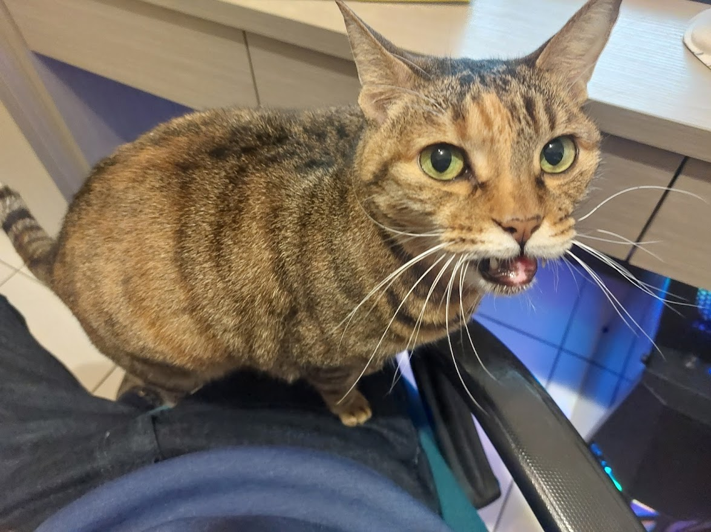

這是我的貓

名字叫做momo
很愛撒嬌
超級超級吵

大約11歲
肚子很圓
是隻母貓
希望能再活五年
Hi~我是Luke，我的個性溫和善於傾聽，不論是團隊配合、處理顧客需求、面對突發狀況，我都能展現良好的同感能力，給予對方正面的回饋。具7年以上桌遊店門市人員經驗、兒童教育經驗、影片後製經驗
2013~2016
你好我是Luke，今年31歲，台北人，畢業於亞洲大學心理學系。我的個性溫和待人親切，喜歡參與團隊合作，與信任的夥伴一同挑戰並完成各項業務，會令我獲得極大的成就感。我認為傾聽他人的想法非常重要，在職場上我一直都秉持著這樣的價值觀，認真了解顧客需求，重視同事的意見。
我在大三時進入「瘋桌遊台中店」擔任工讀生，並於畢業後轉為正職繼續工作。有別於一般的桌遊店，我們的業務相當多元，除了常見的販售、出租、現場遊玩以外，還需要外出辦活動、到學校上社團課、經營youtube頻道，所有的業務我都有獨立負責的經驗，也因此培養出了多樣的能力。
1.掌握顧客需求並推銷產品： 了解現場顧客的需求，推薦合適的產品。此外，遇到學校或公家單位訂購大批桌遊時，也會負責與窗口聯絡，替客戶規畫推薦清單。
2.自主學習與解說規則： 替現場遊玩的顧客講解桌遊規則，空閒時我會自行研究說明書規則，並想辦法組織成語言，用淺顯的敘述引導玩家們盡快進入狀況。
3.兒童教育與課程規畫： 我在台中多所學校皆有擔任社團指導老師的經驗，熟悉如何與學生溝通，挑選合適的教材。合作過的對象包含 衛道中學、西苑中學、忠明國中、惠文國中、東大附小、台中YMCA。
4.影片剪輯後製： 我們團隊於2017年創立youtube頻道「逸馬的桌遊小教室」，我負責剪輯並後製影片，使用軟體為 vegas pro ，熟知基本的後製技巧。
5.主持happy hour及教師研習： 協助團隊舉辦多場對外活動，到社區、公司行號舉辦 happy hour，或到學校舉辦桌遊研習。除了團隊作業以外，也有負責主講，獨立帶完整個活動的經驗。
6.撰寫桌遊規則介紹文章： 研讀遊戲說明書，把規則流程簡化並重新編寫，上傳至部落格供玩家查詢。
近年受到疫情影響，桌遊產業受到極大的衝擊，我在重新檢視自己的人生規劃之後，決定轉換跑道，重新學習不同領域的知識。目前我正在自學程式語言(Python)，期望可以朝資訊軟體產業發展，當然也不排斥挑戰其他產業。我很重視一同工作的夥伴，希望能找到互相扶持的夥伴與團隊，共同在未來的道路上努力。